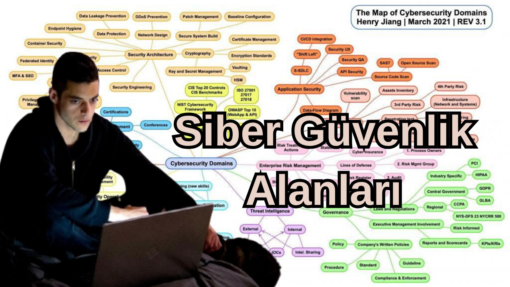

Siber Güvenliğin Alanları
Siber Güvenlik, oldukça genis ve farklı uzmanlıkları olan bi alandır. Bu yazımda Siber güvenliğin farklı disiplinlerinden bu disiplinlerin farklarından, sektordeki maas karsılığından(2025 Kasım ayına göre) ve farklı detay konularından bahsediceğim.
Konuyla ilgili Youtube videom
2015 yılında değiliz.
Bastan belirtmek isterim ki birçok film ve dizide olduğu gibi (en gerçekçi hacker dizisi olan mr robotta dahil) tek kisi birçok yeri hackleyip tek basına nasaya sızmak falan tarzı "havalı" yada "dahice" hack olayını yapamaz. Bunun en büyük nedeni ise artık siber güvenliğin ap ayrı bi disiplin haline gelmesi ve bunla birlikte saldırılara karsı farkllı önlemler alınması. Belgesellerini izlediğimiz adamların döneminde bunlar yoktu Kevin mitnick mesela evet dönemine göre çok iyidi ama o dönemde neredeyse hiç güvenlik önlemi yoktu ama artık var. Bütün bunlar tek bi kisinin devasa büyük hackler yapamamasının en büyük nedeni aslında hala bunlar imkansız değil ama eskisinden çok daha zor. Ama su unutulmamalı tek bi kisi Devasa bi hack yapmıs olsun bu onun siber güvneliğin bütün disiplinlerine ve alanlarına hakim olduğu için değil hedefine ulasacağı yoldaki teknik gereksinimlere sahip olduğu içindir e tabi sosyal muhendisliğide devreye sokunca her ne kadar eskisi kadar kolay olmasada tek bi kisi internetteki onlarsa sey sayesinde bu seviyedeki hackleri yapabiliyor.
Birden Fazla Disiplinde Uzman Olmak
Peki birden fazla disiplinde uzman olmak imkansız mı? Kesinlikle hayır hatta bu çok popüler bir sey örnekle size anlatayım, Benim sahsen tanıstığım bi Reverse eng uzmanı sektöre ilk girdiğinde soc çalısanı olarak baslamıs(bu terimler size yabancı geliyorsa telas etmeyin yazının devamında bundan bahsediyorum). soc lvl 1 iken "suan bi saldırı oluyo mu olmuyor mu?" yetisini kazanmıs. soc lvl 2 olduğunda ise "Bu saldırıya nasıl karsı koyabiliriz?" yetisini kazanmıs ardından ise kendisini yazılımda gelistrimis ve suan çalıstığı meslekte zararlı yazılımları inceliyor tabiki bu iki yeterlilikte suanki mesleğinde yardımcı oluyor. Baska bi örnekten bahsedeyim diyelimki bi Web uygulama güvenlikçisiniz, owasp top 10 zafiyetlerini ve web uygulaması gelistirmeyi biliyosunuz eğeer sistem güvenliğidede kendinizi gelistiriseniz uzman bi penetrasyon testeri olursunuz. Bunun nedeni sadece sızmıyor aynı zamanda da sızdıktan sonra kullanıcı yetkilerini artırıyosunuz. Bütün bunlar çok disiplinli olmanın avantajlarıdır. Bu arada ilk bahsettiğim kisi suanda kriptoloji alanında yüksek lisans yaptığından bahsetmisti amacı sadece ransomwarelerde uzman bi siber güvenlik uzmanı olup bu alanda akla gelen ilk isim olmak. Bu arada aiye bi ransomware toolu yazdırdığım bi videom var dikkatinizi çekebilir
Şirketlerin Siber Güvenliğe Bakış Açısı
Bu sorunun cevabı Türkiye AB ve Amerika olmak üzere üçe ayrılıyor
Türkiye
Türkiye de siber güvenlik konusu genelde daha az önemseniyor
Gösterilen önem çoğunlukla regülasyondan kaynaklı ve büyük hacklenmelerde dahi ceza ödenmiyor
Türkiye de siber güvenlik sektörünün potansiyeli baya yüksek
Ülkede genç ve teknolojiyi seven bir iş gücü var
Üniversitelerde bilgisayar mühendisliği siber güvenlik ve bilgi teknolojileri alanlarında lisans ve yüksek lisans programları giderek artıyor
Bu da gelecekte nitelikli siber güvenlik uzmanı yetiştirmek için iyi bir kaynak sağlıyor ama halen uzman açığı çok
Türkiye de çalışan başına düşen iş yükü AB ve Amerika ya göre baya fazla
Çalışan profili olarak Türkiye de siber güvenlik uzmanları genellikle 25-35 yaş arası ve teknik olarak iyi kişiler
Büyük şirketler kendi siber güvenlik birimlerini kuruyor ama KOBİ ler çoğunlukla dışarıdan destek alıyor
Maaşlar deneyime ve şirkete göre değişiyor
Ortalama bir uzman aylık 30000 50000 TL arasında
Kıdemli veya yönetici olanlar 70000 TL ve üstü alabiliyor
Bu maaşlar genç yetenekleri çekmek için yeterli ama ABD ve AB ye göre hala düşük
Türkiye de siber güvenlik ekosistemi hızlı büyüyor
Yerli yazılım ve güvenlik firmaları devlet ve özel sektöre hizmet veriyor
Bankacılık e-ticaret ve telekom gibi alanlarda güvenlik çözümleri artıyor
Devlet de kritik altyapılar için milli siber güvenlik stratejilerini güçlendirmeye çalışıyor
Ama saldırı tespit sistemleri SOC altyapıları ve tehdit istihbaratı konusunda hala dışa bağımlılık var
Türkiye nin coğrafi konumu ve genç nüfusu siber güvenlikte büyük potansiyel yaratıyor
Nitelikli çalışanların yetişmesi start up ekosisteminin gelişmesi ve devlet teşvikleri artarsa Türkiye hem yerel hem uluslararası alanda önemli bir oyuncu olabilir
Ama bunun için mevzuatın uygulanması şirketlerin siber güvenlik kültürünü benimsemesi ve bilinçlendirme çalışmalarının artması gerekiyor
Amerika
Amerika siber güvenliğe gerçekten çok önem veriyor
Hacklenmemek için aktif çalışan bir sektör var
Bu yüzden çok fazla siber güvenlik şirketi var
Büyük şirketler kendi içlerinde ciddi şekilde siber güvenlik birimleri kurmuş durumda
ABD de siber güvenlik hem ulusal güvenlik hem de ekonomik çıkar açısından stratejik bir alan olarak görülüyor
Amerika da siber güvenlik alanında çalışanların profili genellikle deneyimli ve eğitimli kişilerden oluşuyor
Üniversitelerde ve özel eğitim programlarında siber güvenlik uzmanları yetişiyor
Maaşlar Türkiye ye göre çok yüksek
Ortalama bir uzman yıllık 80000 120000 dolar arasında kazanıyor
Kıdemli uzmanlar ve yöneticiler 200000 doları bulabiliyor
Bu maaşlar yetenekleri çekmek için yeterli ama rekabet de çok yoğun
ABD de şirketler genellikle kendi SOC merkezlerini kuruyorlar
Tehdit istihbaratı saldırı tespit ve önleme sistemleri çok gelişmiş
Kamu ve özel sektör birlikte çalışıyor
Siber güvenlik start up lar ve büyük teknoloji şirketleri piyasayı domine ediyor
Ayrıca devlet siber güvenlik alanında düzenlemeler ve yaptırımlar ile baskı yapıyor
Ama şirketler çoğu zaman kendi stratejilerini bağımsız belirleyebiliyorlar
Amerika da sektör büyüklüğü çok büyük ve sürekli büyüyor
İş ilanları çok fazla ve yeni teknolojilere yatırım yapılıyor
Yapay zeka ve makine öğrenimi siber güvenlikte aktif olarak kullanılıyor
Bu yüzden ABD global siber güvenlik trendlerini belirleyen bir ülke konumunda
Türkiye gibi ülkeler için hem ilham hem de rekabet unsuru oluyor
Avrupa Birliği
AB de siber güvenlik daha çok regülasyon ve hukuki uyum odaklı
Ticari ve veri güvenliği standartları zorunlu ve uyum sağlamayan ülkelere yaptırım uygulanabiliyor
Şirketler siber güvenliği öncelikle regülasyonlara uyum için yönetiyor
Avrupa da çalışan profili teknik olarak iyi eğitim almış kişilerden oluşuyor
Üniversitelerde siber güvenlik programları yaygın ve Avrupa çapında sertifika programları var
Maaşlar Türkiye ye göre yüksek ama ABD kadar değil
Ortalama bir uzman yıllık 60000 90000 euro civarında kazanıyor
Kıdemli kişiler 120000 euro ya kadar çıkabiliyor
AB de şirketler çoğunlukla regülasyon uyumunu öncelikli görüyor
SOC merkezleri ve tehdit izleme sistemleri yaygın ama daha çok uyum odaklı
Devlet düzenlemeleri ve regülasyon baskısı oldukça güçlü
Özellikle GDPR gibi veri koruma yasaları şirketleri sürekli denetliyor ve cezai yaptırımlar uygulanıyor
Avrupa da siber güvenlik ekosistemi oldukça gelişmiş
Yerli firmalar var ama ABD gibi inovasyon ve start up lar daha sınırlı
Regülasyon baskısı inovasyonu sınırlıyor ama uyum kültürü güçlü
Türkiye gibi ülkeler için AB bir örnek ve baskı kaynağı oluyor
Blue Team Ve Red Team Nedir?
Güvenlik anlayısı 2 ye ayrılır bunların karısımı ile olabilecek en güvenli sistemleri üretmeye çalısırız. Ofansif ve Defansif güvenlik medya ve popüler kültürde en çok bilinen olan ofansif güvenlikten bahsedelim. Gelistiriciler sistemlerinizde bi hata bıraktı ve bu hata sonucu hackerler sisteminize girebiliyor. Bunu ancak bi saldırgan gibi bakarak görebilirsiniz, bu bakıs açısı ve mentalite siber güvenliğin red teami olarak bilinir. Hani derler ya bilmemne sirketinde bi açık buldu ve su kadar para kazandı diye bunlar en üst düzey açıklar için kimse bi sitedeki idoru bulduğunuz için size milyonlar vermez. Gelelim ofansif güvenlik kısmına, sektörün asıl büyük alanı budur pek fazla gözükmez ama hem maaslar açısından hemde is imkanları açısından red teama göre çok daha fazla avantajlıdır. Bu kisiler sistem hacklendikten sonra yada olay esnasında olaya mudahale ederler. Blue teame en güzel örnek security operation center analistleridir (soc). Bu kisiler güvenlik operasyonları merkezinda oturur ve iç ağda olan olayları inceler "su olursa hacklenebiliriz" diyerek kurallar yazarlar. Örneğin BTK süpeli domainleri yayınlar bu domainlerden birinin ip adresine giden bi paket olursa alermler çalar ve olabilecek saldırıları engellemeye çalısırlar.
Yazılım Dilleri Açıklamaları
Yazılım Dilleri Açıklamaları
1. Ağ Güvenliği (Network Security)
Ağ güvenliği, siber güvenliğin en köklü ve en temel dallarından biridir. Bir kuruluşun, kurumun ya da devletin dijital altyapısının dış dünyaya açılan kapılarını korumayı hedefler. En basit ifadeyle, ağ güvenliği “verilerin bir noktadan diğerine güvenli biçimde taşınmasını sağlama” işidir. Ancak 2025 itibarıyla Türkiye’deki BT altyapılarının çoğu bulutla entegre olduğu için, klasik yerel ağ güvenliği artık bulut + hibrit sistemlerin korunması anlamına da gelmektedir.
Gereken Teknik Beceriler
- TCP/IP, DNS, DHCP, VLAN, VPN, Proxy gibi ağ protokollerine hâkimiyet
- Firewall yapılandırmaları (Fortinet, Palo Alto, Cisco ASA, pfSense vb.)
- IDS/IPS sistemleri (Snort, Suricata, Zeek)
- Wireshark, Nmap, Burp Suite gibi analiz araçlarını etkin kullanabilme
- Linux/Windows Server yönetimi ve log inceleme becerileri
Türkiye’de Durum (Kasım 2025)
2025 yılında Türkiye’de ağ güvenliği uzmanlarına olan ihtiyaç, özellikle enerji, bankacılık, savunma ve e-ticaret sektörlerinde ciddi oranda artmıştır. Büyük şehirlerde (İstanbul, Ankara, Kocaeli, İzmir) SOC merkezleri (Security Operation Center) açan şirketlerin sayısı 2023’e göre %40 artmıştır.
Ancak işverenlerin talepleri de yükselmiştir: artık yalnızca sertifika değil, pratik beceri de aranmaktadır. Örneğin sadece “CompTIA Network+” belgesi olan biri yerine, “Fortinet NSE4 + gerçek vaka çözüm deneyimi” olan adaylar önceliklidir. İş ilanlarında genellikle SOC Analyst, Network Security Engineer veya Firewall Specialist unvanları görülür.
Maaş Aralıkları (Kasım 2025, Türkiye)
| Pozisyon | Deneyim | Ortalama Maaş (TL) |
|---|---|---|
| Junior Ağ Güvenliği Uzmanı | 0–2 yıl | 35.000 – 55.000 TL |
| Mid-Level Network Security Engineer | 2–5 yıl | 60.000 – 90.000 TL |
| Senior / SOC Team Lead | 5+ yıl | 100.000 – 150.000+ TL |
Dövizle çalışan veya global uzaktan pozisyonlarda bu rakamlar 2–3 katına çıkabilir. Ancak Türkiye iç pazarında maaş artışı genellikle büyük kurumsal firmalarda görülür.
İş Bulma Zorluğu
2025 itibarıyla ağ güvenliği alanında orta seviye pozisyonlar için rekabet oldukça fazladır. Bunun nedeni, sektöre girişin “nispeten kolay” olmasıdır; birçok kişi bu alandan başlar. Ancak ileri seviye uzmanlık (örneğin SOC yönetimi veya güvenlik mimarisi) hâlâ az kişide vardır.
Yeni mezunlar için SOC Analyst olarak başlamak en yaygın yoldur. Ancak burada vardiyalı çalışma, gece nöbetleri ve stresli ortam gibi zorluklar vardır.
Avantajları
- Her sektörün ihtiyaç duyduğu bir uzmanlık (bankacılık, sağlık, enerji, kamu vb.)
- Uzaktan çalışma imkânı yüksektir
- Yurt dışı iş fırsatları güçlüdür
- Temel siber güvenlik bilgisini kazandırır; diğer alanlara geçiş kolaydır
Zorlukları
- Vardiyalı çalışma ve anlık kriz yönetimi baskısı
- Sürekli güncellenen teknolojilere ayak uydurma zorunluluğu
- Yanlış yapılandırmaların büyük zararlara yol açma riski
- Yüksek stres düzeyi (özellikle SOC ortamlarında)
Kimler İçin Uygun?
Bu alan detaycı, sabırlı ve analitik düşünebilen kişiler için idealdir. Ağ topolojilerini anlamaktan zevk alıyorsan, sistematik düşünüyorsan ve “her paketin neden oradan geçtiğini” merak ediyorsan tam sana göre olabilir.
Eğer daha yaratıcı, test odaklı veya kod yazmayı seven biriysen; bir süre sonra Uygulama Güvenliği (AppSec) veya Penetrasyon Testi alanlarına geçmeyi düşünebilirsin.
“Ağ güvenliği, siber güvenliğin kemik yapısı gibidir. Sağlam bir altyapı olmadan hiçbir sistem güvenli olamaz.”
2. Uygulama Güvenliği (Application Security – AppSec)
Uygulama Güvenliği (AppSec), siber güvenliğin yazılım geliştirme ile doğrudan kesiştiği alandır. Amacı, bir uygulamanın tasarımından yayına kadar tüm yaşam döngüsünde güvenli olmasını sağlamaktır. Artık yalnızca ağları değil, yazılımın kendisi de korunmalıdır — çünkü saldırıların büyük kısmı doğrudan uygulamalara yöneliktir.
2025 yılında Türkiye’de her sektörde (özellikle finans, e-ticaret ve kamu) binlerce web, mobil ve API tabanlı uygulama kullanılmaktadır. Bu da AppSec uzmanlarına olan talebi hızla artırmıştır. Ancak Türkiye’de bu alanda yetkin uzman sayısı hâlâ azdır; çoğu yazılımcı güvenlik bilincine sahip değildir. Bu durum, AppSec’i hem yüksek potansiyele sahip hem de nispeten az rekabetli bir alan haline getirmektedir.
Gereken Teknik Beceriler
- OWASP Top 10 güvenlik açıklarını derinlemesine bilmek
- Web teknolojileri (HTML, CSS, JS, REST API, JSON, GraphQL) konusunda bilgi
- Backend dillerinden en az biri: Python, Java, .NET, Node.js, Go
- Uygulama test araçları: Burp Suite, OWASP ZAP, Postman, Nessus, Acunetix
- Statik ve dinamik analiz (SAST/DAST) araçları: SonarQube, Veracode, Checkmarx
- Güvenli kodlama prensipleri (input validation, encryption, session management)
Türkiye’de Durum (Kasım 2025)
Türkiye’de 2025 itibarıyla AppSec pozisyonları genellikle orta ve büyük ölçekli teknoloji şirketlerinde bulunmaktadır. Özellikle fintech, savunma sanayi ve kamu ihalelerinde “güvenli yazılım geliştirme süreci (Secure SDLC)” artık zorunlu hale gelmiştir. Bu yüzden AppSec uzmanı olan kişiler, hem güvenlik ekiplerinde hem yazılım ekiplerinde “köprü rolü” üstlenmektedir.
Maaş Aralıkları (Kasım 2025, Türkiye)
| Pozisyon | Deneyim | Ortalama Maaş (TL) |
|---|---|---|
| Junior AppSec Specialist | 0–2 yıl | 40.000 – 60.000 TL |
| Mid-Level Application Security Engineer | 2–5 yıl | 70.000 – 100.000 TL |
| Senior AppSec / Secure SDLC Architect | 5+ yıl | 120.000 – 180.000+ TL |
Bu alanda global çalışmak çok yaygındır. Özellikle uzaktan ABD veya Avrupa tabanlı AppSec danışmanlık projeleri yapan Türk mühendisler, 3.000 – 6.000 USD arası aylık gelir elde etmektedir.
İş Bulma Zorluğu
AppSec alanı hâlâ uzman açığı bulunan bir alandır. Ancak giriş seviyesi pozisyon azdır, çünkü şirketler genellikle “en az 1–2 yıl yazılım deneyimi” ister. Bu nedenle yazılım geliştiriciler veya test mühendisleri için AppSec’e geçiş daha kolaydır.
Yeni başlayanlar için TryHackMe veya OWASP Juice Shop gibi platformlarda pratik yapmak, GitHub projelerine katkı sağlamak ve bug bounty deneyimi edinmek işe alımda büyük avantaj sağlar.
Avantajları
- Teknolojiyle iç içe, yaratıcı bir alan
- Yazılım bilgisiyle güvenliği birleştirme fırsatı
- Global freelance ve danışmanlık imkânı çok yüksek
- AppSec uzmanları genellikle yüksek maaşlı pozisyonlardadır
- Çeşitli sektörlerde çalışma olanağı (bankacılık, sağlık, kamu, SaaS)
Zorlukları
- Sürekli değişen framework ve teknolojilere adapte olma zorunluluğu
- Yazılımcılarla iletişimde “denge” kurmak (güvenliği yavaşlatmadan sağlamak)
- Derin teknik bilgi gerektirir — hem kod hem güvenlik bilmek zorundasın
- Uygulama kaynak kodlarına erişim kısıtlı olduğunda denetim yapmak zorlaşabilir
Kimler İçin Uygun?
AppSec, hem teknik hem analitik düşünebilen, kod yazmayı seven kişiler için idealdir. Yazılım geliştirip, aynı zamanda “nasıl kırılabilir” diye düşünmek seni heyecanlandırıyorsa, bu alan tam sana göredir.
Detaylı, araştırmayı seven, sabırlı ve yazılımla uğraşmayı seven biriysen, AppSec sana hem yüksek gelir hem global fırsatlar sunar. Ancak sadece teorik bilgiyle değil, bolca pratikle ilerlenmelidir.
Popüler Sertifikalar ve Kaynaklar
- OWASP Top 10 & OWASP Web Security Testing Guide
- TryHackMe – “Web Fundamentals” ve “OWASP Juice Shop” odaları
- PortSwigger Web Security Academy (ücretsiz)
- Certified Application Security Engineer (CASE)
- Burp Suite Practitioner Certificate
“Kod yazmak bir sanattır; güvenli kod yazmak ise bu sanatın mühendislik halidir.”
3. Bulut Güvenliği (Cloud Security)
Bulut güvenliği, verilerin ve uygulamaların fiziksel sunuculardan bağımsız olarak güvenli bir şekilde bulutta barındırılmasını sağlar. 2025 itibarıyla Türkiye’de birçok şirket, verilerini artık yerinde sunucularda tutmak yerine AWS, Azure, Google Cloud veya yerli bulut sağlayıcıları (Türk Telekom Bulut, Turkcell Cloud) üzerinden yönetiyor. Bu durum, bulut güvenliği uzmanlarına talebi ciddi şekilde artırdı.
Bulut güvenliği yalnızca teknik önlemler değil, aynı zamanda politikalar, izin yönetimi ve uyumluluk ile ilgilidir. Yanlış yapılandırılmış bir bulut ortamı, bir şirketin yüz binlerce müşteri verisini riske atabilir. 2025’te Türkiye’de özellikle finans ve e-ticaret sektörlerinde bulut ihlalleri ciddi maliyetler doğurmaktadır.
Gereken Teknik Beceriler
- AWS, Azure ve Google Cloud güvenlik servislerini bilmek (IAM, Security Hub, CloudTrail, VPC Security)
- Bulut ağları ve sanal sunucuların yapılandırılması
- Şifreleme yöntemleri ve veri sınıflandırması
- Container güvenliği: Docker, Kubernetes ve RBAC yönetimi
- Bulut izleme ve olay yönetimi: SIEM, CloudWatch, Azure Monitor
- Yedekleme ve felaket kurtarma planlaması
Türkiye’de Durum (Kasım 2025)
Türkiye’de bulut adaptasyonu hızla artıyor. Özellikle KOBİ’ler bile artık verilerini buluta taşımakta. Büyük kurumlarda güvenlik hataları, mali kayıplara ve regülasyon ihlallerine yol açabiliyor. Bu yüzden bulut güvenliği uzmanları hem teknik hem de yönetim becerilerine sahip olmalıdır. Kamu kurumlarında KVKK ve siber güvenlik yasalarına uyum zorunludur.
Maaş Aralıkları (Kasım 2025, Türkiye)
| Pozisyon | Deneyim | Ortalama Maaş (TL) |
|---|---|---|
| Junior Cloud Security Engineer | 0–2 yıl | 45.000 – 65.000 TL |
| Mid-Level Cloud Security Specialist | 2–5 yıl | 70.000 – 110.000 TL |
| Senior Cloud Security Architect | 5+ yıl | 120.000 – 180.000+ TL |
İş Bulma Zorluğu
Bulut güvenliği Türkiye’de hâlâ uzman açığı olan bir alan. Ancak sertifikalı adaylar (AWS Certified Security, Azure Security Engineer) çok hızlı iş bulabiliyor. Özellikle uzaktan çalışmaya uygun olması nedeniyle genç uzmanlar için global projelerde fırsatlar var. Zorluk, hızlı değişen servisler ve bulut teknolojilerini sürekli öğrenmeyi gerektiriyor.
Avantajları
- Her sektörde geçerli, iş bulma şansı yüksek
- Global projelerde çalışma imkanı
- Uzaktan çalışma ve danışmanlık fırsatları
- Yüksek maaş potansiyeli
- Kariyer ilerleme imkanı: Cloud Security Architect, DevSecOps gibi üst pozisyonlar
Zorlukları
- Hızla değişen servisler ve araçlar
- Yanlış yapılandırmaların büyük risk oluşturması
- İzleme ve uyumluluk gereksinimleri yoğun iş yükü yaratabilir
- Global ve yerli standartların birlikte uygulanması karmaşık olabilir
Kimler İçin Uygun?
Analitik düşünen, bulut teknolojilerine meraklı ve sürekli öğrenmeye istekli kişiler için ideal. Teknik becerilerini strateji ile birleştirip, farklı sektörlerde güvenlik çözümleri geliştirmeyi sevenler için bulut güvenliği mükemmel bir alan.
Popüler Sertifikalar ve Kaynaklar
- AWS Certified Security – Specialty
- Microsoft Certified: Azure Security Engineer Associate
- Google Professional Cloud Security Engineer
- Certified Cloud Security Professional (CCSP)
- Pratik: Terraform + CloudFormation ile güvenli altyapı kurma deneyimi
“Bulut güvenliği, dijital çağda verilerin ve hizmetlerin görünmez kale duvarıdır.”
4. Kimlik ve Erişim Yönetimi (Identity and Access Management – IAM)
Kimlik ve Erişim Yönetimi (IAM), siber güvenliğin temel taşlarından biridir. AMAÇ: Kurum içindeki tüm kullanıcıların kim olduklarını doğrulamak ve hangi kaynaklara erişebileceklerini kontrol etmektir. Türkiye’deki şirketler ve devlet kurumları, özellikle 2025 itibarıyla KVKK, GDPR ve ISO 27001 uyumluluğu gereği IAM sistemlerini zorunlu hâle getirmiştir.
IAM sistemi, dijital dünyadaki “anahtar kart” gibi çalışır. Çalışanlar veya kullanıcılar sisteme giriş yaparken kimliklerini doğrular ve izinleri doğrultusunda sadece yetkili oldukları verilere erişir. Bu sayede hem iç tehditler hem de dış saldırılar minimize edilir.
Gereken Teknik Beceriler
- Active Directory ve LDAP yönetimi
- Single Sign-On (SSO) ve Multi-Factor Authentication (MFA) uygulamaları
- Role-Based Access Control (RBAC) ve Attribute-Based Access Control (ABAC) prensipleri
- Azure AD, Okta, Ping Identity, Keycloak gibi IAM platformları deneyimi
- API güvenliği ve token yönetimi (OAuth, OpenID Connect, JWT)
- Loglama, raporlama ve erişim denetimi (audit) becerileri
Türkiye’de Durum (Kasım 2025)
Türkiye’de büyük şirketler artık çalışanlarının ve müşterilerinin erişimlerini merkezi IAM çözümleri ile yönetiyor. Özellikle finans, telekom ve kamu kurumlarında IAM uzmanları kritik pozisyondadır. 2025 itibarıyla uzaktan çalışma modeli yaygınlaştığından, güvenli erişim sistemleri daha stratejik hale gelmiştir.
Maaş Aralıkları (Kasım 2025, Türkiye)
| Pozisyon | Deneyim | Ortalama Maaş (TL) |
|---|---|---|
| Junior IAM Specialist | 0–2 yıl | 40.000 – 60.000 TL |
| Mid-Level IAM Engineer | 2–5 yıl | 70.000 – 100.000 TL |
| Senior IAM Architect / Lead | 5+ yıl | 120.000 – 160.000+ TL |
İş Bulma Zorluğu
Türkiye’de IAM uzmanlığı hâlâ yüksek talep gören bir alan. Ancak çoğu pozisyon, hem teknik hem de yönetim yetkinliği istediğinden yeni mezunlar için başlangıç biraz zor olabilir. Kurumlar, IAM projelerini yalnızca deneyimli adaylarla yürütmeyi tercih eder.
Avantajları
- Hemen her sektörde kritik bir rol
- Kurumsal ve devlet projelerinde uzun vadeli iş imkânı
- Uzaktan ve global danışmanlık fırsatları
- Orta ve üst düzey pozisyonlarda yüksek maaş potansiyeli
- Uyumluluk ve risk yönetimi bilgisi kazandırır
Zorlukları
- Karmaşık erişim politikaları ve organizasyonel yapı
- Hatalı yapılandırma büyük güvenlik riskleri yaratır
- Çok sayıda kullanıcı ve sistem ile sürekli güncel kalmak gerekir
- Güvenlik ile kullanıcı deneyimi arasında denge kurmak zor olabilir
Kimler İçin Uygun?
Analitik, detaycı ve süreç odaklı kişiler için uygundur. İnsan ve teknoloji etkileşimini yönetmeyi seven, güvenlik ve yönetim süreçlerini birleştirmek isteyenler IAM’de başarılı olur.
Popüler Sertifikalar ve Kaynaklar
- Microsoft Certified: Identity and Access Administrator Associate
- Okta Certified Administrator
- Certified Identity and Access Manager (CIAM)
- Pratik: Azure AD Conditional Access Policies, SSO ve MFA yapılandırmaları
“Kimin neye erişebileceğini bilmeden bir sistem güvenli olamaz. Kimlik güvenliği, dijital güvenliğin merkezidir.”
5. Kriptografi (Cryptography)
Kriptografi, verilerin gizliliğini ve bütünlüğünü sağlayan siber güvenlik alanıdır. Temel amacı: Bilgiyi sadece yetkili kişilerin okuyabilmesini sağlamak için şifrelemektir. Günümüzde web sitelerinde HTTPS ile gördüğümüz küçük kilit simgesi, kriptografinin aktif olarak kullanıldığını gösterir.
2025 Türkiye’sinde kriptografi, finans sektörü, devlet kurumları ve telekomünikasyon gibi kritik alanlarda zorunlu hale gelmiştir. Özellikle uzaktan çalışma ve bulut sistemlerinin yaygınlaşması, güçlü şifreleme ve güvenli anahtar yönetimini kaçınılmaz kılmaktadır.
Gereken Teknik Beceriler
- Simetrik şifreleme algoritmaları: AES, DES, ChaCha20
- Asimetrik şifreleme algoritmaları: RSA, ECC, Diffie-Hellman
- Hashing ve dijital imzalar: SHA-256, SHA-3, HMAC
- PKI ve sertifika yönetimi: SSL/TLS, X.509
- Kriptografi kütüphanelerini kullanabilme (OpenSSL, PyCryptodome, BouncyCastle)
- Uygulama ve veri güvenliği entegrasyonu
Türkiye’de Durum (Kasım 2025)
Türkiye’de kriptografi alanında uzman talebi artmıştır. Bankalar ve ödeme sistemleri, yerli ödeme altyapıları ve dijital cüzdanlar için güçlü şifreleme çözümleri arıyor. Devlet kurumları, kritik altyapılar ve e-devlet uygulamalarında şifreleme standartlarını zorunlu kılmıştır. Özellikle KVKK ve GDPR uyumluluğu, veri şifreleme ve anahtar yönetimi konusundaki uzmanlık ihtiyacını artırmıştır.
Maaş Aralıkları (Kasım 2025, Türkiye)
| Pozisyon | Deneyim | Ortalama Maaş (TL) |
|---|---|---|
| Junior Cryptography Engineer | 0–2 yıl | 45.000 – 65.000 TL |
| Mid-Level Crypto Specialist | 2–5 yıl | 70.000 – 110.000 TL |
| Senior Cryptography / Security Architect | 5+ yıl | 120.000 – 180.000+ TL |
İş Bulma Zorluğu
Kriptografi alanı Türkiye’de hâlâ uzman açığı bulunan bir bölgedir. Özellikle matematiksel ve algoritmik yetkinliği yüksek mühendisler, finans ve ödeme sistemleri şirketlerinde kolay iş bulabilir. Zorluk, teorik bilgi ile uygulama becerilerini birleştirmek ve sürekli değişen güvenlik standartlarına ayak uydurmaktır.
Avantajları
- Finans, telekom ve devlet projelerinde kritik rol
- Yüksek maaş ve global çalışma imkânı
- Güvenlik alanındaki temel bilgi ve yetkinliği kazandırır
- Akademik ve AR-GE fırsatları geniştir
Zorlukları
- Matematiksel ve algoritmik yoğun çalışma gerektirir
- Yanlış uygulama ciddi güvenlik açıklarına yol açabilir
- Yerli ve global regülasyonları takip etmek zorunludur
- Sürekli güncel kalmak gerekir
Kimler İçin Uygun?
Matematik ve algoritmalara ilgi duyan, sabırlı, detaycı ve güvenli kodlama konusunda özenli kişiler için uygundur. Akademik düşünce yapısı ve uygulamalı deneyimi birleştirebilenler kriptografi alanında başarılı olur.
Popüler Sertifikalar ve Kaynaklar
- Certified Encryption Specialist (EC-Council)
- Certified Information Systems Security Professional (CISSP) – Cryptography Domain
- Pratik: OpenSSL ile veri şifreleme ve çözme
- Coursera: Cryptography I & II (Stanford University)
- Crypto101 ve Practical Cryptography kitapları
“Kriptografi, veriyi görünmez ve okunamaz hâle getirerek dijital dünyada güvenliği sağlar.”
6. Güvenlik Operasyonları (Security Operations – SecOps)
Güvenlik Operasyonları (SecOps), bir kurumun dijital savunmasını 7/24 izleyen, tehditleri tespit eden ve yanıt veren kritik bir alandır. Eğer Ağ Güvenliği (Network Security) bir kaleyi inşa etmekse, SecOps o kalede sürekli nöbet tutan, alarmları takip eden ve anlık müdahale eden komuta merkezi ekibidir.
Türkiye’de 2025 itibarıyla bankalar, telekom şirketleri, e-ticaret platformları ve kamu kurumları büyük SecOps merkezleri kurmaktadır. Bu merkezlerde çalışanlar, hem yerli hem global saldırı tekniklerini takip ederek kurumları korur. Siber saldırılar artık sadece teknik değil, aynı zamanda sosyal mühendislik tabanlı olduğu için insan hatasını da minimize etmek SecOps’un görevlerindendir.
Gereken Teknik Beceriler
- SIEM (Security Information and Event Management) araçları: Splunk, ELK, IBM QRadar, ArcSight
- IDS/IPS sistemleri ve ağ trafiği analiz araçları
- Threat hunting ve siber tehdit istihbaratı okuma
- Olay müdahale planları (Incident Response – IR) ve prosedürleri
- Log analizi, malware analizi ve forensik temeller
- Python veya PowerShell ile otomasyon ve script yazabilme
Türkiye’de Durum (Kasım 2025)
Türkiye’de SecOps alanı hızla büyüyen bir sektördür. Özellikle finans, enerji ve kamu sektörlerinde ulusal güvenlik stratejileri kapsamında SecOps ekipleri kritik konumda. KOBİ’lerde ise genellikle küçük ölçekli SecOps veya Managed Security Service Provider (MSSP) kullanımı yaygındır. Uzaktan çalışmanın yaygınlaşması, SecOps uzmanlarına hem lokal hem global projelerde fırsatlar sunmaktadır.
Maaş Aralıkları (Kasım 2025, Türkiye)
| Pozisyon | Deneyim | Ortalama Maaş (TL) |
|---|---|---|
| Junior SOC Analyst | 0–2 yıl | 40.000 – 60.000 TL |
| Mid-Level SOC Engineer / Incident Responder | 2–5 yıl | 70.000 – 110.000 TL |
| Senior SOC Manager / Security Operations Lead | 5+ yıl | 120.000 – 180.000+ TL |
İş Bulma Zorluğu
Türkiye’de SecOps uzmanlığı hâlâ çok talep gören bir alandır, fakat yeterli deneyim gerektirir. Junior seviyede pozisyonlar sınırlıdır, çünkü birçok şirket 1–2 yıl deneyimli adayları tercih etmektedir. Ancak pratik deneyim, sertifikalar ve cyber range platformlarında (TryHackMe, Hack The Box) deneyim kazananlar hızlıca iş bulabilir.
Avantajları
- Kritik ve sürekli talep gören alan
- Global ve yerli firmalarda yüksek maaş potansiyeli
- Uzaktan çalışma ve freelance danışmanlık fırsatları
- Siber olaylara anlık müdahale deneyimi kazanılır
- Cybersecurity ekosisteminin tüm alanları ile çalışma fırsatı
Zorlukları
- Yoğun stres ve sürekli tetikte olma
- 7/24 çalışma ve acil durum müdahaleleri
- Hızla değişen tehdit ortamına uyum sağlama zorunluluğu
- Çok sayıda araç ve log yönetimini öğrenme gerekliliği
Kimler İçin Uygun?
Analitik düşünen, hızlı karar alabilen, stres yönetiminde başarılı ve sürekli öğrenmeye açık kişiler için uygundur. Hem teknik hem de operasyonel becerileri birleştirebilenler SecOps alanında başarılı olur.
Popüler Sertifikalar ve Kaynaklar
- Certified SOC Analyst (CSA)
- CompTIA Cybersecurity Analyst (CySA+)
- EC-Council Certified Incident Handler (ECIH)
- Splunk Core Certified User ve Admin
- Pratik: Threat hunting, SIEM olay simülasyonları, malware analizi
“Bir saldırı gerçekleşmeden önce önlem almak önemlidir, ancak gerçek güvenlik operasyonları sahada ve gerçek zamanlı gerçekleşir.”
7. Penetrasyon Testi (Ethical Hacking / Pentesting)
Penetrasyon testi, bir sistemin veya ağın güvenliğini ölçmek için etik hackerlar tarafından yapılan kontrollü saldırılardır. Amaç, kötü niyetli kişiler sisteme girmeden önce zayıf noktaları tespit etmektir.
Türkiye’de 2025 itibarıyla penetrasyon testi, bankalar, telekom, e-ticaret ve devlet kurumları için zorunlu hale gelmiştir. KVKK ve ISO 27001 gibi regülasyonlar, şirketlerin yılda en az bir kez bağımsız pentest yaptırmasını öneriyor. Penetrasyon test uzmanları, siber saldırgan gibi düşünerek sistemdeki açıkları bulur ve raporlar.
Gereken Teknik Beceriler
- Web uygulamaları güvenliği: SQL Injection, XSS, CSRF, RCE
- Ağ güvenliği testleri: port taramaları, firewall bypass, sniffing
- Social engineering ve phishing simülasyonları
- Metasploit, Burp Suite, Nmap, Wireshark gibi araçların kullanımı
- Exploit geliştirme ve reverse engineering temelleri
- Raporlama ve zafiyet yönetimi
Türkiye’de Durum (Kasım 2025)
Türkiye’de pentest uzmanlığına talep hızla artmaktadır. Bankalar ve finans kuruluşları, fintech uygulamaları ve e-ticaret platformları sürekli güncel testler talep ediyor. Kamu kurumları da kritik altyapı ve e-devlet hizmetlerini korumak için pentest uzmanlarına ihtiyaç duyuyor. Ayrıca uzaktan çalışma ve global iş fırsatları, yetenekli etik hackerlar için cazip kariyer imkanları sunuyor.
Maaş Aralıkları (Kasım 2025, Türkiye)
| Pozisyon | Deneyim | Ortalama Maaş (TL) |
|---|---|---|
| Junior Penetration Tester | 0–2 yıl | 45.000 – 65.000 TL |
| Mid-Level Ethical Hacker | 2–5 yıl | 70.000 – 110.000 TL |
| Senior Penetration Tester / Red Team Lead | 5+ yıl | 120.000 – 180.000+ TL |
İş Bulma Zorluğu
Türkiye’de pentest alanı hâlâ uzman açığı olan bir alandır. Ancak sertifikalı ve deneyimli adaylar için iş bulmak görece kolaydır. Zorluk, sürekli güncel kalmak, yeni exploit tekniklerini öğrenmek ve güvenlik araçlarını etkin şekilde kullanabilmektir.
Avantajları
- Her sektörde kritik güvenlik rolü
- Uzaktan ve global projelerde çalışma imkânı
- Yüksek maaş ve hızlı kariyer ilerlemesi
- Teorik ve pratik güvenlik bilgisi kazandırır
- Red Team veya Security Consultant gibi üst pozisyonlara geçiş kolaylığı
Zorlukları
- Stresli ve yoğun tempolu çalışma
- Yaratıcı düşünme ve problem çözme gerekliliği
- Hatalı test raporları ciddi risk oluşturabilir
- Yeni güvenlik açıklarını ve exploitleri sürekli takip etmek gerekir
Kimler İçin Uygun?
Analitik, meraklı, sabırlı ve problem çözme becerisi yüksek kişiler için uygundur. Teknik bilgiye ek olarak hacker düşünce tarzını anlayabilenler pentesting alanında başarılı olur.
Popüler Sertifikalar ve Kaynaklar
- Certified Ethical Hacker (CEH)
- Offensive Security Certified Professional (OSCP)
- OSWE, eCPPT, LPT gibi ileri düzey penetrasyon test sertifikaları
- Pratik: Hack The Box, TryHackMe, CTF platformları
- Web uygulama güvenliği için OWASP Top 10 rehberleri
“Kale ne kadar sağlam olursa olsun, birisi denemeden gerçek güvenliği ölçemezsiniz. Pentest, bu denemeyi etik olarak yapan profesyonellerdir.”
8. Dijital Adli Bilişim ve Olay Müdahalesi (DFIR – Digital Forensics and Incident Response)
Dijital Adli Bilişim ve Olay Müdahalesi (DFIR), siber güvenlikte saldırı sonrası süreçleri kapsayan kritik bir alandır. Eğer bir saldırgan sistemlerinizi aşarsa ve veri ihlali gerçekleşirse, DFIR uzmanları durumu analiz eder, hasarı sınırlamak için müdahale eder ve olayın kökenini araştırır.
Türkiye’de 2025 itibarıyla finans, telekom, devlet kurumları ve büyük e-ticaret şirketleri, olay müdahalesi ve dijital adli bilişim ekiplerini zorunlu hâle getirmiştir. KVKK ve ISO 27001 gibi regülasyonlar, olay sonrası raporlama ve adli delil toplama süreçlerini standartlaştırmaktadır. Bu nedenle DFIR uzmanları hem teknik hem de hukuki bilgiye sahip olmalıdır.
Gereken Teknik Beceriler
- Incident Response (IR) prosedürleri ve kriz yönetimi
- Malware ve ransomware analizi
- Memory ve disk forensics (RAM, hard disk görüntüleri, log analizi)
- Network forensics ve paket analizi (Wireshark, TCPDump)
- Digital evidence collection ve chain-of-custody uygulamaları
- SIEM entegrasyonu ve log korelasyonu
- Python, PowerShell veya Bash ile otomasyon ve veri işleme
Türkiye’de Durum (Kasım 2025)
Türkiye’de DFIR alanında uzman sayısı sınırlıdır, bu nedenle yetenekli adaylar için iş bulma imkânı yüksektir. Özellikle bankalar, fintech şirketleri ve devlet kurumları kritik olaylara hızlı müdahale için DFIR ekipleri kurmaktadır. Uzaktan çalışma imkânları ile global projelerde deneyim kazanmak da mümkündür.
Maaş Aralıkları (Kasım 2025, Türkiye)
| Pozisyon | Deneyim | Ortalama Maaş (TL) |
|---|---|---|
| Junior DFIR Analyst | 0–2 yıl | 45.000 – 65.000 TL |
| Mid-Level Incident Responder | 2–5 yıl | 70.000 – 110.000 TL |
| Senior DFIR / Team Lead | 5+ yıl | 120.000 – 180.000+ TL |
İş Bulma Zorluğu
Türkiye’de DFIR alanı hâlâ uzman açığı olan bir alandır. Ancak sertifikalı ve deneyimli adaylar için iş bulmak nispeten kolaydır. Zorluk, olay analizlerinde hızlı ve doğru karar almayı, teknik ve hukuki bilgi ile birleştirmeyi gerektirir.
Avantajları
- Kritik olaylara müdahale etme fırsatı
- Her sektörde yüksek talep ve iş imkânı
- Global danışmanlık ve uzaktan çalışma fırsatları
- Analitik düşünme ve problem çözme becerilerini geliştirir
- Yüksek maaş potansiyeli ve kariyer ilerleme fırsatı
Zorlukları
- Olaylar genellikle acil ve stresli
- Güncel saldırı tekniklerini takip etmek gerekir
- Hatalı analiz ciddi kurumsal kayıplara yol açabilir
- Hukuki ve regülasyon gereksinimleri karmaşık olabilir
Kimler İçin Uygun?
Analitik düşünen, detaycı, hızlı karar alabilen ve hem teknik hem hukuki perspektife sahip kişiler için uygundur. Kriz yönetimi ve dijital adli bilişim süreçlerini yönetebilenler DFIR alanında başarılı olur.
Popüler Sertifikalar ve Kaynaklar
- GIAC Certified Incident Handler (GCIH)
- GIAC Certified Forensic Analyst (GCFA)
- EC-Council Certified Incident Handler (ECIH)
- EnCase Certified Examiner (EnCE)
- Pratik: Malware analysis, memory dump incelemesi, log korelasyonu
“Saldırı sonrası süreç, savunmanın gerçek testidir. DFIR uzmanları bu testin dedektifleridir.”
9. Yönetim, Risk ve Uyumluluk (Governance, Risk and Compliance – GRC)
GRC, siber güvenlikte teknoloji kadar strateji, yönetim ve uyumluluğa odaklanan bir alandır. AMAÇ: Kurumun güvenlik stratejisini belirlemek, riskleri yönetmek ve yasal/regülasyon gerekliliklerine uyum sağlamaktır. Türkiye’de 2025 itibarıyla KVKK, ISO 27001, GDPR ve sektöre özel regülasyonlar (bankacılık, sağlık, enerji) şirketleri GRC süreçlerini uygulamaya zorlamaktadır.
GRC uzmanları, kurumun güvenlik politikalarını oluşturur, riskleri değerlendirir ve süreçlerin uygun şekilde işlediğini denetler. Bu alan, teknik bilgi kadar yönetim ve organizasyon becerisi de gerektirir. Her bir karar, hem güvenliği hem de yasal uyumu etkiler.
Gereken Teknik ve Yönetsel Beceriler
- Risk yönetimi ve risk değerlendirme metodolojileri (ISO 31000, NIST)
- Uyumluluk standartları: KVKK, GDPR, ISO 27001, HIPAA, PCI-DSS
- Politika ve prosedür geliştirme
- Denetim süreçleri ve raporlama
- Siber güvenlik stratejisi ve proje yönetimi
- İç ve dış denetçilerle koordinasyon
Türkiye’de Durum (Kasım 2025)
Türkiye’de büyük şirketler ve devlet kurumları için GRC uzmanlığı kritik bir konumda. Özellikle finans, enerji, telekom ve sağlık sektörlerinde GRC süreçleri zorunlu. 2025 itibarıyla kurumlar, veri güvenliği ve uyumluluk için hem yerli hem global standartları takip etmek zorunda. Bu nedenle GRC uzmanlarına yüksek talep var.
Maaş Aralıkları (Kasım 2025, Türkiye)
| Pozisyon | Deneyim | Ortalama Maaş (TL) |
|---|---|---|
| Junior GRC Analyst | 0–2 yıl | 40.000 – 60.000 TL |
| Mid-Level GRC Specialist / Risk Analyst | 2–5 yıl | 70.000 – 110.000 TL |
| Senior GRC Manager / Compliance Lead | 5+ yıl | 120.000 – 180.000+ TL |
İş Bulma Zorluğu
GRC alanında Türkiye’de uzman açığı vardır; ancak iş bulmak deneyime bağlıdır. Junior seviyede giriş pozisyonları sınırlıdır, fakat sertifikalı ve deneyimli adaylar genellikle kısa sürede iş bulabilir. Zorluk, hem teknik hem de yönetim ve regülasyon bilgisini birleştirebilmektir.
Avantajları
- Kritik rol, her sektörde talep görür
- Strateji ve yönetim deneyimi kazandırır
- Global ve yerli firmalarda üst pozisyonlara geçiş imkânı
- Uyumluluk süreçlerini yöneterek yüksek sorumluluk kazanılır
- Uzaktan ve danışmanlık fırsatları bulunur
Zorlukları
- Yasal ve regülasyon değişikliklerini sürekli takip etme zorunluluğu
- Teknik ve yönetim arasında denge kurmak gerekir
- Şirket içi politika ve süreçleri etkin uygulamak bazen zordur
- Riskleri doğru değerlendirmek ve önceliklendirmek gereklidir
Kimler İçin Uygun?
Analitik düşünen, iletişimi güçlü, regülasyonlara hakim ve hem teknik hem stratejik düşünebilen kişiler için uygundur. Yönetim becerileri ile güvenlik ve uyumluluk süreçlerini entegre edebilenler başarılı olur.
Popüler Sertifikalar ve Kaynaklar
- Certified in Risk and Information Systems Control (CRISC)
- Certified Information Systems Auditor (CISA)
- ISO 27001 Lead Implementer / Lead Auditor
- CompTIA Security+ ve CySA+ (temel risk ve uyumluluk için)
- Pratik: Risk değerlendirme raporları, uyumluluk denetimleri, politika geliştirme
“Güvenlik sadece teknolojiyle sağlanmaz; yönetim, risk ve uyumluluk ile desteklenmelidir.”
10. Veri Kaybını Önleme (Data Loss Prevention – DLP)
Veri Kaybını Önleme (DLP), kurumların hassas verilerini yetkisiz erişim veya sızma riskine karşı koruyan bir siber güvenlik alanıdır. Temel amacı: Gizli bilgilerin (müşteri listeleri, finansal veriler, gizli iş planları) yanlışlıkla veya kötü niyetle dışarı sızmasını engellemektir.
Türkiye’de 2025 itibarıyla KVKK, ISO 27001 ve sektör regülasyonları, veri güvenliği ve DLP uygulamalarını zorunlu hale getirmiştir. Özellikle bankacılık, finans, sağlık ve e-ticaret sektörlerinde DLP sistemleri kritik öneme sahiptir.
Gereken Teknik Beceriler
- DLP çözümlerinin kurulumu ve yönetimi: Symantec, Forcepoint, Microsoft Purview
- Veri sınıflandırma ve etiketleme metodolojileri
- Olay yönetimi ve raporlama
- Veri şifreleme ve erişim kontrol politikaları
- Çalışan davranış analizi ve iç tehdit tespiti
- Bulut ortamlarında veri kaybı önleme (Microsoft 365, Google Workspace, AWS)
Türkiye’de Durum (Kasım 2025)
Türkiye’de DLP uzmanlığına talep giderek artmaktadır. Büyük şirketler, KVKK uyumluluğu ve iş süreçlerinde veri güvenliğini sağlamak için DLP sistemlerine yatırım yapmaktadır. KOBİ’lerde ise genellikle bulut tabanlı DLP çözümleri tercih edilmektedir.
Maaş Aralıkları (Kasım 2025, Türkiye)
| Pozisyon | Deneyim | Ortalama Maaş (TL) |
|---|---|---|
| Junior DLP Analyst | 0–2 yıl | 40.000 – 60.000 TL |
| Mid-Level DLP Specialist | 2–5 yıl | 70.000 – 110.000 TL |
| Senior DLP Engineer / Manager | 5+ yıl | 120.000 – 180.000+ TL |
İş Bulma Zorluğu
DLP alanında uzmanlık Türkiye’de hâlâ azdır, bu nedenle iş bulmak sertifikalı ve deneyimli adaylar için nispeten kolaydır. Zorluk, veri sınıflandırma, bulut ortamları ve farklı DLP araçlarını etkin şekilde yönetmeyi öğrenmek ve sürekli regülasyonları takip etmektir.
Avantajları
- Kritik verileri koruyarak şirketlerin güvenliğini artırır
- Her sektörde talep görür ve yüksek maaş potansiyeli sunar
- Bulut ve on-premise sistemleri kapsayan deneyim kazandırır
- Uyumluluk ve risk yönetimi bilgisi sağlar
- Uzaktan ve global projelerde çalışma fırsatı
Zorlukları
- Farklı veri kaynaklarını ve sistemleri yönetme zorluğu
- Çalışan davranışlarını doğru analiz etme gerekliliği
- Yanlış yapılandırma veri sızıntısına yol açabilir
- Regülasyon değişikliklerini sürekli takip etmek gerekir
Kimler İçin Uygun?
Analitik düşünen, dikkatli, güvenlik ve uyumluluk süreçlerine hakim kişiler için uygundur. Teknik bilgiye ek olarak süreç yönetimi ve raporlama becerisi olanlar DLP alanında başarılı olur.
Popüler Sertifikalar ve Kaynaklar
- Certified Information Security Manager (CISM) – DLP modülleri
- Certified Data Privacy Solutions Engineer (CDPSE)
- Microsoft Certified: Security, Compliance, and Identity Fundamentals
- Pratik: DLP politikaları kurma, veri sınıflandırma, olay simülasyonları
- Forcepoint ve Symantec DLP eğitimleri
“Veriyi korumak, kurumun geleceğini korumaktır. DLP bu güvenliği sağlar.”
11. Tehdit İstihbaratı (Threat Intelligence)
Tehdit İstihbaratı, bir kurumun siber güvenlik savunmalarını güçlendirmek için mevcut ve potansiyel saldırganlar hakkında bilgi toplama ve analiz etme sürecidir. Amaç, olası saldırıları önceden tahmin etmek ve önlem almaktır.
Türkiye’de 2025 itibarıyla bankalar, telekom ve kritik altyapı kurumları, SecOps ve DFIR ekiplerini desteklemek için tehdit istihbaratı ekipleri kurmaktadır. Özellikle Dark Web, hacker forumları ve global siber tehdit raporları takip edilmektedir. Bu sayede SecOps ekipleri, olası saldırılara proaktif önlem alabilir.
Gereken Teknik Beceriler
- Open Source Intelligence (OSINT) toplama ve analizi
- Dark Web araştırmaları ve hacker forumu takipleri
- Tehdit actor ve APT (Advanced Persistent Threat) analizleri
- SIEM ve SOC entegrasyonu ile bilgi paylaşımı
- Phishing, malware ve zero-day exploit tespit süreçleri
- Raporlama ve stratejik öneriler sunma
Türkiye’de Durum (Kasım 2025)
Türkiye’de tehdit istihbaratı alanı hâlâ yeni ve gelişmekte olan bir sektördür. Bankacılık, finans, enerji ve kamu sektörlerinde yetkin tehdit istihbaratı uzmanlarına yüksek talep vardır. Global tehditleri takip eden ve raporlayan uzmanlar, hem ulusal hem uluslararası projelerde çalışma imkânı bulmaktadır.
Maaş Aralıkları (Kasım 2025, Türkiye)
| Pozisyon | Deneyim | Ortalama Maaş (TL) |
|---|---|---|
| Junior Threat Intelligence Analyst | 0–2 yıl | 45.000 – 65.000 TL |
| Mid-Level Threat Analyst | 2–5 yıl | 70.000 – 110.000 TL |
| Senior Threat Intelligence Specialist / Lead | 5+ yıl | 120.000 – 180.000+ TL |
İş Bulma Zorluğu
Türkiye’de yetkin tehdit istihbaratı uzmanları azdır, bu nedenle iş bulmak deneyimli ve sertifikalı adaylar için kolaydır. Zorluk, sürekli değişen saldırı taktiklerini takip etmek, global tehditleri analiz etmek ve proaktif önlemler önermektir.
Avantajları
- Proaktif siber savunma sağlama imkânı
- Her sektörde talep gören kritik bir alan
- Global projelerde çalışma ve yüksek maaş fırsatı
- Sürekli öğrenme ve güncel kalma olanağı
- SecOps ve DFIR ekiplerini destekleyerek stratejik rol oynama
Zorlukları
- Tehditler hızla değişir, sürekli güncel kalmak gerekir
- Yoğun veri analizi ve raporlama gereklidir
- Dark Web ve hacker forumu araştırmaları etik ve hukuki dikkat gerektirir
- Yanlış istihbarat kararları ciddi güvenlik riskleri yaratabilir
Kimler İçin Uygun?
Analitik düşünen, araştırmacı ruhlu, hızlı veri işleme ve raporlama becerisine sahip kişiler için uygundur. Global tehditleri takip edebilen ve SecOps/DFIR ekipleri ile koordinasyon sağlayabilen uzmanlar başarılı olur.
Popüler Sertifikalar ve Kaynaklar
- Certified Threat Intelligence Analyst (CTIA)
- GIAC Cyber Threat Intelligence (GCTI)
- OSINT ve Maltego eğitimleri
- Pratik: Threat feeds, Dark Web araştırmaları, phishing ve malware analizleri
“Savunmada en iyi strateji, düşmanı tanımaktır. Tehdit istihbaratı bu stratejiyi sağlar.”
12. Güvenlik Mimarisi (Security Architecture)
Güvenlik Mimarisi, bir kurumun tüm bilgi teknolojisi altyapısının güvenli bir şekilde tasarlanması ve yapılandırılması sürecidir. Temel amacı: Sistemlerin, uygulamaların, verilerin ve kullanıcıların güvenliğini en baştan planlamak ve entegrasyonu sağlamaktır.
Türkiye’de 2025 itibarıyla güvenlik mimarisi, özellikle bankacılık, telekom ve kamu projelerinde kritik rol oynuyor. ISO 27001, KVKK ve GDPR gibi standartlar, güvenlik kontrollerinin baştan tasarlanmasını ve sürekli iyileştirilmesini şart koşuyor.
Gereken Teknik Beceriler
- Ağ mimarisi tasarımı ve güvenlik katmanları planlaması
- Uygulama güvenliği ve veri akışı analizi
- Güvenlik çözümlerinin entegrasyonu: firewall, IDS/IPS, SIEM, DLP
- Şifreleme, kimlik ve erişim yönetimi (IAM) sistemleri tasarımı
- Bulut güvenliği ve hibrit ortam yönetimi
- Politika ve prosedürlerin mimariye entegrasyonu
- Risk bazlı güvenlik kararları alma ve iş gereksinimleri ile uyum
Türkiye’de Durum (Kasım 2025)
Türkiye’de güvenlik mimarları özellikle finans, e-ticaret ve devlet kurumları tarafından yüksek talep görmektedir. Karmaşık ve hibrit altyapılarda güvenlik mimarisini oluşturabilen uzmanlar, proje bazlı veya sürekli danışmanlık pozisyonlarında çalışabilir. Ayrıca global projelerde uzaktan çalışmak da mümkündür.
Maaş Aralıkları (Kasım 2025, Türkiye)
| Pozisyon | Deneyim | Ortalama Maaş (TL) |
|---|---|---|
| Junior Security Architect | 0–2 yıl | 50.000 – 70.000 TL |
| Mid-Level Security Architect | 2–5 yıl | 80.000 – 120.000 TL |
| Senior Security Architect / Lead | 5+ yıl | 130.000 – 200.000+ TL |
İş Bulma Zorluğu
Güvenlik mimarları Türkiye’de hâlâ sınırlı sayıda bulunmaktadır. Deneyimli ve sertifikalı adaylar için iş bulmak görece kolaydır; ancak kompleks altyapıları yönetebilmek ve güncel güvenlik trendlerini takip etmek gereklidir.
Avantajları
- Kurumsal güvenlik stratejisinde kritik rol
- Her sektörde yüksek talep ve maaş imkânı
- Global projelerde danışmanlık veya lider pozisyon fırsatları
- Güvenlik kontrol ve süreçlerini baştan tasarlama imkânı
- Teknik ve yönetim becerilerini birlikte geliştirme
Zorlukları
- Karmaşık altyapılarda risk analizi ve tasarım yapma zorluğu
- Sürekli değişen tehdit ve teknoloji trendlerini takip etmek gerekir
- Yönetim ve teknik ekipler arasında koordinasyonu sağlamak zor olabilir
Kimler İçin Uygun?
Hem teknik hem stratejik düşünebilen, analitik ve planlama becerisi yüksek kişiler için uygundur. Sistemleri baştan güvenli tasarlamak ve süreçleri optimize etmek isteyen uzmanlar bu alanda başarılı olur.
Popüler Sertifikalar ve Kaynaklar
- Certified Information Systems Security Professional (CISSP)
- Certified Information Security Manager (CISM)
- TOGAF (Enterprise Architecture) + Security Mimarisi modülleri
- Microsoft Certified: Security, Compliance, and Identity Architect
- Pratik: Ağ ve uygulama mimarisi tasarımı, güvenlik kontrolleri entegrasyonu
“İyi bir güvenlik mimarisi, sistemleri korumak için inşa edilmiş sağlam bir temeldir.”
13. Fiziksel Güvenlik (Physical Security)
Dijital veriler ne kadar güvenli olursa olsun, hepsi fiziksel cihazlar üzerinde depolanır: sunucular, veri merkezleri, kablolar ve depolama üniteleri. Fiziksel Güvenlik, bu donanımların çalınma, zarar görme veya yetkisiz erişim risklerine karşı korunmasını sağlar.
Türkiye’de 2025 itibarıyla özellikle bankalar, telekom ve büyük veri merkezleri, fiziksel güvenlik için ciddi yatırımlar yapmaktadır. ISO 27001 ve KVKK gibi standartlar, fiziksel güvenliğin teknik güvenlik kadar önemli olduğunu vurgular.
Gereken Teknik ve Operasyonel Beceriler
- Veri merkezi ve sunucu odası güvenlik standartları
- Kapı erişim sistemleri, biyometrik okuyucular ve CCTV yönetimi
- Çevresel güvenlik: Yangın, su baskını ve enerji kesintisine karşı önlemler
- Fiziksel erişim politikaları ve denetimi
- İzinsiz giriş algılama sistemleri ve alarm yönetimi
- Fiziksel olay yönetimi ve raporlama
Türkiye’de Durum (Kasım 2025)
Türkiye’de veri merkezleri ve kritik altyapı tesislerinde fiziksel güvenlik standartları sürekli yükselmektedir. Güvenlik personeli, teknolojik cihazlar ve prosedürlerin birlikte çalışmasıyla kurumlar, hem fiziksel hem siber tehditlere karşı korunur. Özellikle büyük şehirlerdeki veri merkezlerinde fiziki güvenlik uzmanlarına talep yüksektir.
Maaş Aralıkları (Kasım 2025, Türkiye)
| Pozisyon | Deneyim | Ortalama Maaş (TL) |
|---|---|---|
| Fiziksel Güvenlik Görevlisi / Junior | 0–2 yıl | 25.000 – 40.000 TL |
| Fiziksel Güvenlik Uzmanı / Orta Seviye | 2–5 yıl | 45.000 – 70.000 TL |
| Fiziksel Güvenlik Müdürü / Senior | 5+ yıl | 80.000 – 120.000+ TL |
İş Bulma Zorluğu
Fiziksel güvenlik alanında Türkiye’de iş bulmak görece kolaydır, ancak kritik tesislerde deneyim ve sertifikasyon önemlidir. Zorluk, hem insan yönetimi hem de teknolojik sistemleri birlikte kullanmayı gerektirir.
Avantajları
- Fiziksel ve siber güvenliğin entegrasyonunu deneyimleme
- Her sektörde ve büyük veri merkezlerinde iş imkânı
- Yönetim ve denetim deneyimi kazandırır
- Farklı teknolojik sistemlerle çalışma olanağı
Zorlukları
- 24/7 görev ve vardiya sistemi
- Fiziksel olaylara hızlı müdahale zorunluluğu
- Fiziksel ve siber tehditleri birlikte yönetme gerekliliği
- Güvenlik prosedürlerinin sıkı şekilde uygulanması gerekir
Kimler İçin Uygun?
Organizasyon ve prosedür yönetiminde yetkin, kriz anında hızlı karar alabilen ve teknoloji ile insan yönetimini birleştirebilen kişiler için uygundur.
Popüler Sertifikalar ve Kaynaklar
- Certified Protection Professional (CPP)
- Physical Security Professional (PSP)
- ISO 27001 Physical Security modülleri
- Pratik: CCTV yönetimi, erişim kontrol sistemleri, olay simülasyonları
“Dijital güvenlik, sağlam bir fiziksel temelin üzerine inşa edilir.”
14. Mobil Güvenlik (Mobile Security)
Günümüzde neredeyse herkes cebinde güçlü bir bilgisayar taşıyor: akıllı telefonlar, tabletler ve dizüstü bilgisayarlar. Bu kolaylık, beraberinde çeşitli riskler de getirir. Mobil Güvenlik, mobil cihazların ve üzerlerindeki verilerin korunmasını sağlar.
Türkiye’de 2025 itibarıyla mobil cihazlar kurumsal süreçlerin bir parçası hâline geldi. Bankacılık, e-ticaret, sağlık ve devlet uygulamaları, mobil güvenlik için özel politikalar uygulamaktadır.
Gereken Teknik Beceriler
- Mobil cihaz yönetimi (Mobile Device Management – MDM) sistemleri
- Mobil uygulama güvenliği ve kod incelemesi
- Mobil ağ ve Wi-Fi güvenliği
- Cihaz şifreleme ve uzaktan silme (remote wipe) uygulamaları
- Mobil tehdit tespiti: kötü amaçlı uygulamalar, phishing ve SMS/MMS saldırıları
- BYOD (Bring Your Own Device) politikalarının yönetimi
Türkiye’de Durum (Kasım 2025)
Türkiye’de mobil güvenlik uzmanlığına ihtiyaç her geçen gün artıyor. Özellikle bankacılık ve finans sektörü, mobil uygulamalarda güvenlik açıklarını tespit etmek ve kullanıcı verilerini korumak için uzman ekipler istihdam ediyor. E-ticaret ve sağlık sektörlerinde de mobil cihazlar üzerinden veri sızıntılarını önlemek kritik bir konu.
Maaş Aralıkları (Kasım 2025, Türkiye)
| Pozisyon | Deneyim | Ortalama Maaş (TL) |
|---|---|---|
| Junior Mobile Security Analyst | 0–2 yıl | 40.000 – 60.000 TL |
| Mid-Level Mobile Security Specialist | 2–5 yıl | 70.000 – 110.000 TL |
| Senior Mobile Security Engineer / Lead | 5+ yıl | 120.000 – 180.000+ TL |
İş Bulma Zorluğu
Mobil güvenlik Türkiye’de hızla büyüyen bir alan. İş bulmak, deneyim ve sertifikasyonla doğru orantılı. Junior seviyede pozisyonlar sınırlı olabilir, ancak uzman ve sertifikalı adaylar hızla iş bulabilir. Zorluk, hem mobil cihaz hem de uygulama güvenliğini aynı anda yönetmektir.
Avantajları
- Kurumsal ve kişisel cihazları koruma deneyimi kazandırır
- Her sektörde talep gören bir alan
- BYOD ve MDM yönetimi ile geniş beceri seti
- Global mobil güvenlik projelerine katılım imkânı
- Uzaktan çalışma fırsatları ve danışmanlık olanakları
Zorlukları
- Farklı cihaz ve işletim sistemlerini yönetme zorluğu
- Uygulama güvenliği ve ağ güvenliğini birlikte yönetmek gerekir
- Mobil tehditler hızla değişir, sürekli güncel kalmak gerekir
Kimler İçin Uygun?
Hem teknik hem analitik düşünebilen, mobil uygulama ve ağ güvenliği konularına ilgi duyan kişiler için uygundur. BYOD ve MDM süreçlerini yönetebilen, sorunları hızlı çözebilen uzmanlar başarılı olur.
Popüler Sertifikalar ve Kaynaklar
- Certified Mobile Security Professional (CMSP)
- CompTIA Security+ ve CySA+ (temel mobil güvenlik için)
- Pratik: MDM kurulumu, mobil uygulama güvenliği testleri, uzaktan silme ve şifreleme senaryoları
- OWASP Mobile Security Project kaynakları
“Mobil cihazlar modern dünyanın kapılarıdır; onları korumak, şirketinizi korumaktır.”
15. Nesnelerin İnterneti Güvenliği (IoT Security)
Nesnelerin İnterneti (IoT), internete bağlanan tüm akıllı cihazları ifade eder: buzdolapları, saatler, trafik ışıkları, fabrika sensörleri ve daha fazlası. IoT Güvenliği, bu cihazların siber saldırılara açık hale gelmesini önler ve veri güvenliğini sağlar.
Türkiye’de 2025 itibarıyla IoT cihazlarının kullanımı sanayi 4.0, akıllı şehirler, sağlık ve ev otomasyon sistemlerinde hızla yaygınlaşıyor. Bu nedenle IoT güvenliği, hem endüstriyel hem de bireysel cihazların korunması açısından kritik bir alan hâline geldi.
Gereken Teknik Beceriler
- IoT cihaz ağlarını ve protokollerini güvenli yapılandırma
- Firmware güvenliği ve güncellemelerin yönetimi
- IoT cihazlarının kimlik doğrulama ve şifreleme yöntemleri
- Botnet ve kötü amaçlı cihaz kullanımını tespit etme
- IoT cihazlarının bulut entegrasyonu ve güvenlik politikaları
- Endüstriyel IoT (IIoT) ve SCADA sistemlerinde güvenlik önlemleri
Türkiye’de Durum (Kasım 2025)
Türkiye’de özellikle üretim tesisleri, enerji santralleri ve akıllı şehir projelerinde IoT güvenliği kritik bir gerekliliktir. Büyük firmalar, IoT cihazlarını korumak için özel güvenlik ekipleri kurmaktadır. IoT güvenlik uzmanlarına talep giderek artmaktadır, çünkü bu cihazlar hem fiziksel hem siber riskler taşır.
Maaş Aralıkları (Kasım 2025, Türkiye)
| Pozisyon | Deneyim | Ortalama Maaş (TL) |
|---|---|---|
| Junior IoT Security Analyst | 0–2 yıl | 45.000 – 65.000 TL |
| Mid-Level IoT Security Specialist | 2–5 yıl | 70.000 – 120.000 TL |
| Senior IoT Security Engineer / Lead | 5+ yıl | 130.000 – 200.000+ TL |
İş Bulma Zorluğu
IoT güvenliği alanında Türkiye’de uzman sayısı sınırlıdır. Bu nedenle iş bulmak deneyimli ve sertifikalı adaylar için nispeten kolaydır. Zorluk, farklı cihaz türleri, protokoller ve üreticilerle uyumlu güvenlik çözümleri geliştirmektir.
Avantajları
- Yeni ve hızla büyüyen bir uzmanlık alanı
- Her sektörde ve özellikle endüstri projelerinde yüksek talep
- IoT ve IIoT alanında teknik uzmanlık kazandırır
- Global projelerde çalışma ve danışmanlık fırsatları
- Siber ve fiziksel güvenliği birleştirme deneyimi
Zorlukları
- Cihazlar küçük ve düşük maliyetli olduğu için güvenlik açıkları yaygındır
- Firmware ve protokol çeşitliliği karmaşıklık yaratır
- IoT cihazları genellikle sürekli güncellenmelidir
- Fiziksel ve siber tehditleri birlikte yönetmek gerekir
Kimler İçin Uygun?
Analitik düşünen, cihaz ve ağ güvenliği konusunda teknik bilgi sahibi, hem siber hem fiziksel güvenliği birleştirebilen uzmanlar için uygundur.
Popüler Sertifikalar ve Kaynaklar
- Certified IoT Security Practitioner (CIoTSP)
- GIAC Industrial Cybersecurity Certification (GICSP)
- CompTIA Security+ (temel IoT güvenliği için)
- Pratik: IoT ağ yapılandırması, firmware güvenliği testleri, botnet tespit simülasyonları
- OWASP IoT Top Ten ve IoT Security Foundation kaynakları
“Her akıllı cihaz bir kapıdır; onları korumak, tüm sistemi korumaktır.”
16. Güvenlik Farkındalığı ve Eğitim (Security Awareness and Training)
En güçlü güvenlik sistemleri bile dikkatsiz bir insan tarafından aşılabilir. Güvenlik Farkındalığı, çalışanların siber tehditleri tanımasını ve bunlardan kaçınmasını öğretir: phishing e-postaları, sosyal mühendislik saldırıları, şifre hataları ve daha fazlası.
Türkiye’de 2025 itibarıyla, büyük şirketler ve devlet kurumları siber farkındalık programlarını zorunlu hale getirmiştir. Bu sayede çalışanlar, organizasyonun ilk savunma hattı hâline gelmektedir.
Gereken Teknik ve Eğitsel Beceriler
- Siber güvenlik temel bilgilerini çalışanlara aktarabilme
- Simülasyon ve phishing testleri oluşturma
- İç tehditleri tanıma ve raporlama süreçlerini öğretme
- Çalışanlara güvenli şifre ve kimlik doğrulama yöntemlerini öğretme
- Politika ve prosedürlerin anlaşılır şekilde iletilmesini sağlama
Türkiye’de Durum (Kasım 2025)
Türkiye’de farkındalık ve eğitim programları, özellikle bankacılık, telekom ve kamu sektöründe yaygındır. Kurumlar, hem teknik hem davranışsal önlemlerle siber saldırılara karşı koruma sağlar. Farkındalık eğitimleri, çalışanların günlük iş süreçlerinde güvenli davranışları benimsemesini amaçlar.
Maaş Aralıkları (Kasım 2025, Türkiye)
| Pozisyon | Deneyim | Ortalama Maaş (TL) |
|---|---|---|
| Junior Security Awareness Specialist | 0–2 yıl | 35.000 – 55.000 TL |
| Mid-Level Security Awareness Trainer | 2–5 yıl | 60.000 – 95.000 TL |
| Senior Security Awareness Manager / Lead | 5+ yıl | 100.000 – 150.000+ TL |
İş Bulma Zorluğu
Türkiye’de siber farkındalık uzmanları giderek artan bir talep ile karşı karşıyadır. Özellikle büyük şirketlerde ve bankacılık sektöründe bu uzmanlara duyulan ihtiyaç yüksektir. Zorluk, eğitimleri ilgi çekici ve uygulanabilir şekilde tasarlamak ve sürekli güncel kalmaktır.
Avantajları
- Organizasyonun tüm çalışanlarını savunmanın bir parçası yapma imkânı
- Her sektörde talep gören bir alan
- Yüksek etkili ve görünür bir rol
- İç güvenlik kültürünü güçlendirme fırsatı
Zorlukları
- Çalışanların ilgisini çekmek ve alışkanlıklarını değiştirmek zor olabilir
- Programların sürekli güncel tutulması gerekir
- Simülasyon ve testler sırasında yanlış pozitifler veya moral düşüklüğü yaşanabilir
Kimler İçin Uygun?
İletişim becerisi yüksek, eğitici ve öğretici yetenekleri olan, teknik bilgiyi anlaşılır şekilde aktarabilen kişiler için uygundur. İnsan psikolojisini anlayan ve sürekli öğrenmeye açık kişiler başarılı olur.
Popüler Sertifikalar ve Kaynaklar
- Certified Security Awareness Practitioner (CSAP)
- EC-Council Certified Security Awareness Training
- CompTIA Security+ temel bilgileri
- Pratik: Phishing testleri, farkındalık simülasyonları, siber eğitim içerik üretimi
“Siber güvenlik sadece teknolojiyle değil, insanlarla başlar.”
17. Felaket Kurtarma ve İş Sürekliliği (Disaster Recovery & Business Continuity – DR/BC)
Felaketler her zaman planlanamaz: Siber saldırılar, doğal afetler, enerji kesintileri veya veri merkezi arızaları. Felaket Kurtarma (DR) ve İş Sürekliliği (BC), şirketin her koşulda faaliyetlerini sürdürebilmesini sağlar.
Türkiye’de 2025 itibarıyla, büyük ölçekli finans, telekom, üretim ve kamu kurumları, DR/BC planlarını zorunlu hâle getirmiştir. DR/BC uzmanları, sistemleri sadece yeniden çalıştırmakla kalmaz, kritik iş fonksiyonlarının aksamasını önler.
Gereken Teknik ve Yönetim Becerileri
- Veri yedekleme ve replikasyon stratejileri
- Bulut ve hibrit ortam felaket kurtarma çözümleri
- İş Sürekliliği planlama ve kritik süreç analizi
- Olay yönetimi ve kriz senaryolarının tasarımı
- Risk değerlendirmesi ve önceliklendirme
- Personel eğitimleri ve tatbikatlar
Türkiye’de Durum (Kasım 2025)
Türkiye’de DR/BC uzmanlığı özellikle finans, telekom ve enerji sektörlerinde çok talep görmektedir. Büyük veri merkezleri ve kurumsal sistemler için DR planları, sadece teknolojik değil aynı zamanda iş süreçlerini de kapsar. Uzmanlar hem teknik hem de operasyonel süreçleri yönetmek zorundadır.
Maaş Aralıkları (Kasım 2025, Türkiye)
| Pozisyon | Deneyim | Ortalama Maaş (TL) |
|---|---|---|
| Junior DR/BC Analyst | 0–2 yıl | 40.000 – 60.000 TL |
| Mid-Level DR/BC Specialist | 2–5 yıl | 70.000 – 110.000 TL |
| Senior DR/BC Manager / Lead | 5+ yıl | 120.000 – 180.000+ TL |
İş Bulma Zorluğu
Türkiye’de DR/BC uzmanlarına talep yüksek, ancak deneyimli ve sertifikalı adaylar tercih ediliyor. Zorluk, hem teknoloji hem iş süreçleri açısından kompleks planlar geliştirmek ve kriz yönetimini koordine etmektir.
Avantajları
- Kurumsal süreçler üzerinde stratejik etki
- Her sektörde kritik bir uzmanlık alanı
- Kriz anında liderlik ve koordinasyon deneyimi
- Global ve büyük ölçekli projelerde çalışma fırsatları
- Felaketlere karşı organizasyonu hazır tutma sorumluluğu
Zorlukları
- Planlama ve tatbikatlar sürekli güncel tutulmalıdır
- Kriz anında yüksek stres ve hızlı karar alma gerekliliği
- Teknik ve operasyonel süreçleri birlikte yönetmek zor olabilir
- Yedekleme ve kurtarma stratejileri karmaşıktır
Kimler İçin Uygun?
Analitik düşünen, kriz yönetiminde yetkin, hem teknik hem iş süreçlerini anlayabilen uzmanlar için uygundur. Planlama, koordinasyon ve risk yönetimi becerileri yüksek kişiler bu alanda başarılı olur.
Popüler Sertifikalar ve Kaynaklar
- Certified Disaster Recovery Engineer (CDRE)
- Certified Business Continuity Professional (CBCP)
- ISO 22301 İş Sürekliliği Yönetimi Standardı
- Pratik: Felaket senaryosu tatbikatları, yedekleme testleri, kriz yönetimi simülasyonları
“İyi planlanmış bir DR/BC stratejisi, felaketi bir kesintiden ibaret hâle getirir.”
18. Güvenli Yazılım Geliştirme Yaşam Döngüsü (Secure Software Development Lifecycle – SDLC)
Yazılım geliştirme aşamaları: tasarım, geliştirme, test ve dağıtım olarak sıralanır. Güvenli SDLC, güvenliğin her aşamada yerleşmesini sağlar ve sonradan eklenen güvenlik önlemlerinin eksikliklerini ortadan kaldırır.
Türkiye’de 2025 itibarıyla yazılım geliştirme projeleri, bankacılık, sağlık ve e-ticaret gibi sektörlerde güvenli SDLC prensiplerine uygun olarak yürütülmektedir. Bu sayede hem KVKK hem de ISO 27001 standartlarına uyum sağlanır.
Gereken Teknik ve Yönetim Becerileri
- Tehdit modelleme ve risk değerlendirmesi
- Kod inceleme ve statik/dinamik analiz teknikleri
- Güvenli yazılım tasarımı ve mimarisi
- Uygulama güvenlik testleri (penetrasyon testleri, fuzzing vb.)
- Yazılım dağıtımı sırasında güvenlik kontrollerinin uygulanması
- Geliştiriciler ve güvenlik ekipleri arasında koordinasyon sağlama
Türkiye’de Durum (Kasım 2025)
Türkiye’de özellikle büyük bankalar ve yazılım şirketleri SDLC’ye güvenlik katmayı öncelikli hale getirmiştir. Junior yazılım geliştirici pozisyonlarında güvenlik bilgisi giderek önemli bir kriter hâline gelmiştir. Senior ve lider pozisyonlarda SDLC süreçlerini yönetmek stratejik bir görevdir.
Maaş Aralıkları (Kasım 2025, Türkiye)
| Pozisyon | Deneyim | Ortalama Maaş (TL) |
|---|---|---|
| Junior Secure SDLC Developer | 0–2 yıl | 40.000 – 60.000 TL |
| Mid-Level Secure SDLC Engineer | 2–5 yıl | 70.000 – 120.000 TL |
| Senior Secure SDLC Architect / Lead | 5+ yıl | 130.000 – 200.000+ TL |
İş Bulma Zorluğu
Türkiye’de güvenli yazılım geliştirme uzmanlarına talep yüksek, ancak Junior seviyelerde deneyim sınırlıdır. Zorluk, güvenlik ve geliştirme ekiplerini koordineli çalıştırmak ve modern tehditleri yazılım yaşam döngüsüne entegre etmektir.
Avantajları
- Yazılım geliştirme süreçlerinde güvenliği baştan dahil etme imkânı
- Her sektörde kritik ve aranan bir uzmanlık alanı
- Geliştirici ve güvenlik ekipleri ile ortak çalışma deneyimi
- Global yazılım projelerinde çalışma fırsatları
- KVKK ve ISO 27001 uyumluluğu ile yasal riskleri azaltma
Zorlukları
- Geliştirme hızını güvenlik ile dengelemek gerekir
- SDLC süreçleri sürekli güncellenmeli ve iyileştirilmelidir
- Uygulama güvenlik testleri teknik bilgi ve deneyim gerektirir
- Farklı platform ve teknolojilere uyum sağlamak zordur
Kimler İçin Uygun?
Hem yazılım geliştirme hem de güvenlik konusunda bilgisi olan, analitik düşünebilen, problem çözme yeteneği yüksek kişiler için uygundur.
Popüler Sertifikalar ve Kaynaklar
- Certified Secure Software Lifecycle Professional (CSSLP)
- OWASP Application Security Verification Standard (ASVS)
- Pratik: Kod incelemeleri, statik/dinamik analiz, tehdit modelleme, güvenli mimari tasarım
- ISO 27001 ve KVKK uygulama rehberleri
“Güvenliği yazılımın sonuna eklemek yerine, her satır kodun temel taşı hâline getirin.”
19. Uç Nokta Güvenliği (Endpoint Security)
Şirket ağına bağlanan her bilgisayar, dizüstü, telefon veya tablet bir uç nokta (endpoint) olarak adlandırılır. Uç Nokta Güvenliği, bu cihazların siber saldırılara karşı korunmasını sağlar ve ağ güvenliğinin kritik bir parçasıdır.
Türkiye’de 2025 itibarıyla, özellikle finans, telekom, devlet ve üretim sektörlerinde uç nokta güvenliği büyük önem kazanmıştır. Uzaktan çalışma yaygınlaştıkça, uç noktaların korunması şirketlerin veri güvenliği için kritik hâle gelmiştir.
Gereken Teknik Beceriler
- Antivirüs ve anti-malware yazılımlarını yönetme
- Host tabanlı güvenlik duvarları (firewall) ve kontrol politikaları
- Modern Endpoint Detection & Response (EDR) araçlarının kullanımı
- Uç noktalarda şifreleme ve kimlik doğrulama uygulamaları
- Uzaktan cihaz yönetimi ve izleme
- Olay müdahalesi ve tehdit analizi
Türkiye’de Durum (Kasım 2025)
Türkiye’de kurumsal ağlar genişledikçe uç nokta güvenliği önemi artmıştır. Bankalar, kamu kurumları ve büyük firmalar uç nokta güvenliği için özel ekipler kurmaktadır. Endpoint Security uzmanları hem teknik beceri hem de saldırı analiz yeteneği ile aranır.
Maaş Aralıkları (Kasım 2025, Türkiye)
| Pozisyon | Deneyim | Ortalama Maaş (TL) |
|---|---|---|
| Junior Endpoint Security Analyst | 0–2 yıl | 40.000 – 60.000 TL |
| Mid-Level Endpoint Security Specialist | 2–5 yıl | 70.000 – 110.000 TL |
| Senior Endpoint Security Engineer / Lead | 5+ yıl | 120.000 – 180.000+ TL |
İş Bulma Zorluğu
Türkiye’de uç nokta güvenliği uzmanlarına talep oldukça yüksek, ancak deneyimli ve sertifikalı adaylar tercih edilmektedir. Zorluk, farklı cihaz tipleri ve işletim sistemleri için eş zamanlı güvenlik politikaları uygulamak ve sürekli izlemektir.
Avantajları
- Şirket ağı güvenliğinin kritik bir parçası olma
- Her sektörde talep gören uzmanlık alanı
- Uzaktan çalışma ve global projelerde rol alma fırsatı
- Gelişmiş güvenlik araçlarını kullanarak pratik deneyim kazanma
- Proaktif tehdit tespit ve müdahale yetenekleri kazandırır
Zorlukları
- Farklı cihaz ve işletim sistemlerini yönetmek karmaşıktır
- Uç noktaları sürekli izlemek ve tehditleri tespit etmek gerekir
- EDR araçlarını doğru yapılandırmak teknik bilgi gerektirir
- Bir uç nokta zayıf olduğunda tüm ağ risk altına girebilir
Kimler İçin Uygun?
Hem ağ güvenliği hem de cihaz güvenliği konularında bilgisi olan, analitik düşünebilen ve proaktif müdahale yeteneğine sahip kişiler için uygundur.
Popüler Sertifikalar ve Kaynaklar
- CompTIA Security+
- EC-Council Certified Ethical Hacker (CEH)
- Microsoft Certified: Security, Compliance, and Identity Fundamentals
- Pratik: EDR araçları, antivirüs yönetimi, olay müdahale senaryoları
- MITRE ATT&CK ve saldırı simülasyonları
“Bir uç nokta zayıfsa, tüm kale tehlikede demektir.”
20. Hukuki ve Düzenleyici (Legal and Regulatory)
Siber güvenlik sadece teknik bir mesele değildir; aynı zamanda hukuki ve düzenleyici boyutları da vardır. Hukuki ve Düzenleyici alan, yasalar, veri koruma yönetmelikleri, ihlal bildirimleri ve delil yönetimini kapsar.
Türkiye’de 2025 itibarıyla KVKK (Kişisel Verilerin Korunması Kanunu), bankacılık ve sağlık sektörüne yönelik özel yönetmelikler, siber güvenlik standartları (ISO 27001) ve AB GDPR uyumluluğu kritik öneme sahiptir. Hukuk uzmanları, veri toplama, saklama ve ihlal yanıtlarının tümünün yasal standartlara uygun olmasını sağlar.
Gereken Beceriler
- KVKK, GDPR ve ilgili düzenlemeleri anlamak
- Siber olayların yasal boyutunu yönetebilmek
- Veri ihlali bildirim süreçlerini tasarlamak ve uygulamak
- Delil toplama ve dijital adli süreçlerde rehberlik etmek
- Hukuki ve operasyonel ekiplere danışmanlık sağlamak
- Sözleşme ve risk yönetimi süreçlerine destek olmak
Türkiye’de Durum (Kasım 2025)
Türkiye’de kurumlar, özellikle finans ve sağlık sektöründe, siber olayların hukuki boyutlarını yönetebilecek uzmanlara ihtiyaç duymaktadır. Bu alanda çalışanlar, olayların yasal süreçlere uygun şekilde raporlanmasını ve ilgili düzenlemelere tam uyumu sağlar.
Maaş Aralıkları (Kasım 2025, Türkiye)
| Pozisyon | Deneyim | Ortalama Maaş (TL) |
|---|---|---|
| Junior Legal & Compliance Analyst | 0–2 yıl | 45.000 – 65.000 TL |
| Mid-Level Legal & Compliance Specialist | 2–5 yıl | 70.000 – 110.000 TL |
| Senior Legal & Compliance Manager / Lead | 5+ yıl | 120.000 – 180.000+ TL |
İş Bulma Zorluğu
Türkiye’de siber güvenlik hukuku ve düzenlemeleri konusunda uzmanlaşmış kişi sayısı sınırlıdır. Bu nedenle, deneyimli ve sertifikalı uzmanlar için iş bulma nispeten kolaydır. Zorluk, yasal mevzuatlar ile teknik güvenlik önlemleri arasında denge kurmaktır.
Avantajları
- Siber güvenlik ve hukuki süreçleri birleştiren nadir uzmanlık alanı
- Her sektörde kritik ve aranan bir pozisyon
- Hukuki riskleri azaltma ve şirket uyumluluğunu sağlama imkânı
- Global düzenlemeler ve uluslararası standartlarla çalışabilme fırsatı
Zorlukları
- Düzenlemeler ve standartlar sürekli değişmektedir
- Teknik ekipler ile hukuk ekipleri arasında koordinasyon gerektirir
- Olay müdahalesinde hızlı ve doğru karar alma baskısı vardır
Kimler İçin Uygun?
Hukuk, uyumluluk ve siber güvenlik konularına ilgi duyan, detay odaklı, analitik düşünebilen ve iletişim becerileri güçlü kişiler için uygundur.
Popüler Sertifikalar ve Kaynaklar
- Certified Information Privacy Professional (CIPP/E – Avrupa ve GDPR odaklı)
- ISO 27001 Lead Implementer / Auditor
- Certified Information Systems Security Professional (CISSP) – Compliance ve Governance modülleri
- KVKK ve GDPR resmi dokümanları ve rehberleri
- Pratik: Veri ihlali tatbikatları, uyumluluk denetimleri, sözleşme ve politika oluşturma
“Siber güvenlik sadece teknolojiyi değil, aynı zamanda yasaları ve politikaları da kapsar.”
Sonuç: Birbirine Bağlı Savunmalar Dünyası
Ne öğrendik? Siber güvenlik tek bir iş değil — bir ekosistemdir. Her alan bir rol oynar, tıpkı canlı bir organizmadaki organlar gibi. Ağ Güvenliği çevreyi korur. AppSec ve SDLC iç sistemleri güçlendirir. DFIR ve SecOps tehditlere yanıt verir. GRC ve Hukuk, tüm yapıyı yasal ve stratejik olarak hizalar. Farkındalık da insan unsurunu güçlendirir.
Birlikte, bu 20 alan dirençli, uyarlanabilir ve akıllı bir savunma sistemi oluşturur. Dijital dünya her zaman yeni tehditlerle karşılaşacak, ancak bu alanların birlikte çalışması sayesinde verilerimizi — ve geleceğimizi — güvende tutabiliriz.